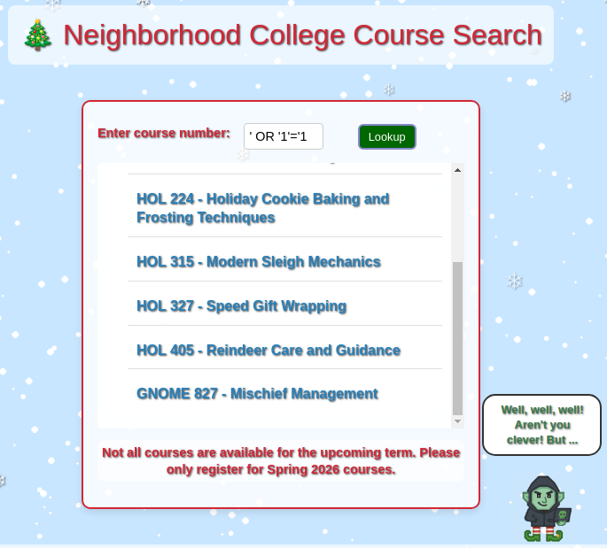

Objective:
Kevin in the Retro Store ponders pentest paradoxes—can you solve Schrödinger's Scope?
Kevin McFarland Conversation:
Kevin McFarland
The Neighborhood College Course Registration System has been getting some updates lately and I'm wondering if you might help me improve its security by performing a small web application penetration test of the site.
For any web application test, one of the most important things for the test is the 'scope', that is, what one is permitted to test and what one should not. While hacking is fun and cool, professional integrity means respecting scope boundaries, especially when there are tempting targets outside our permitted scope.
Thankfully, the Neighborhood College has provided a very concise set of 'Instructions' which are accessible via a link provided on the site you will be testing. Do not overlook or dismiss the instructions! Following them is key to successfully completing the test.
Unfortunately, those pesky gnomes have found their way into the site and have been causing some mischief as well. Be wary of their presence and anything they may have to say as you are testing.
Can you help me demonstrate to the Neighborhood College that we know what responsible penetration testing looks like?
An eternal winter might sound poetic, but there's a reason Tolkien's heroes fought against endless darkness. A neighborhood frozen in time isn't preservation—it's stagnation. No spring astronomy observations, no summer shortwave propagation... just ice.
Hints:
Schrödinger's Scope
From: Santa
Objective: Schrödinger's Scope
Though it might be more interesting to start off trying clever techniques and exploits, always start with the simple stuff first, such as reviewing HTML source code and basic SQLi.
Schrödinger's Scope
From: Santa
Objective: Schrödinger's Scope
Watch out for tiny, pesky gnomes who may be violating your progess. If you find one, figure out how they are getting into things and consider matching and replacing them out of your way.
Schrödinger's Scope
From: Santa
Objective: Schrödinger's Scope
During any kind of penetration test, always be on the lookout for items which may be predictable from the available information, such as application endpoints. Things like a sitemap can be helpful, even if it is old or incomplete. Other predictable values to look for are things like token and cookie values
Schrödinger's Scope
From: Santa
Objective: Schrödinger's Scope
Pay close attention to the instructions and be very wary of advice from the tongues of gnomes! Perhaps not ignore everything, but be careful!
Schrödinger's Scope
From: Santa
Objective: Schrödinger's Scope
As you test this with a tool like
Burp Suite,
resist temptations and stay true to the instructed path.
Working through the Challenge:
Write-up notes
Clicking Schrödinger's Scope brings up the engagement scope/rules page for the
Neighborhood College Course Registration System.
Schrödinger's Scope: initial scope/rules page
Write-up notes
After reviewing (and closing) the Rules of Engagement, we’re returned to the landing page for the
Neighborhood College Course Registration System. From here we can enter the registration portal,
reset the session state, or review the status report and instructions.
Landing page after closing the Rules of Engagement
Write-up notes
Clicking Enter Registration System takes us into the updated
Neighborhood College Course Registration System, where we’re presented with a
Student Login page.
Student Login page after entering the registration system
Write-up notes
Next, we opened the Status Report to see what the system is tracking.
At this point, it reports no vulnerabilities found, but it does show
scope violations (e.g., requests to /gnomeU), which confirms the
app is actively monitoring what paths we touch during testing.
Status Report showing vulnerabilities found and scope violations
Write-up notes
Something triggered the scope violations (notably /gnomeU) even though we never intentionally browsed
there. We’ll circle back to that in a moment.
Back on the Student Login page, I reviewed the page source and spotted a hidden endpoint:
href="/register/sitemap". For a scope-based challenge, a sitemap is extremely useful—so we pulled it.
Browsing to /register/sitemap returned an XML sitemap containing a full list of discovered routes
(including several /admin, /search, and /wip paths).
With a handful of endpoints identified, progress was getting slowed down by repeated /gnomeU
scope violations. We hadn’t manually visited that path, so we pivoted to the browser’s Network tab and
found an image request quietly hitting /gnomeU in the background.
To stop the violations from piling up, we right-clicked the offending request and selected
Block Request URL. After blocking it, the session could run normally without the scope violations ending the test prematurely.
DevTools: Block Request URL for the background /gnomeU request
Write-up notes
After blocking the background request to /gnomeU, we reset the session one more time and
revisited the Status Report to confirm the fix. This time the scope report was clean — no out-of-scope
items were accessed and total violations were back to 0.
Status Report after reset: 0 scope violations
Write-up notes
With scope violations under control, we resumed enumerating the endpoints discovered in the sitemap.
One endpoint immediately stood out: the developer todo list at
/wip/register/dev/dev_todos. The page appears to contain internal notes and potential
clues for the next steps (including references to XSS and a test account password).
Developer todo list discovered under /wip/register/dev/
Write-up notes
Next, we attempted to authenticate using the credentials referenced in the developer notes. Instead of
reaching the portal, the login flow failed immediately with an Invalid Forwarding IP
message, indicating the application is enforcing some kind of IP / proxy / header validation before it
will allow authentication.
Login attempt blocked by Invalid Forwarding IP validation.
Write-up notes
At this point, I switched to Burp Suite since the requests were getting more complex and
building on each other. Burp made it much easier to intercept, replay, and iterate safely.
Note: because we’re now using the Burp browser, we need to block the /gnomeU
request again to avoid racking up scope violations.
With the login attempt intercepted, I added X-Forwarded-For: 127.0.0.1 to satisfy the
forwarding/proxy restriction. Below is the request as captured before forwarding it to the server.
The request with X-Forwarded-For: 127.0.0.1 successfully bypassed the “Invalid Forwarding IP”
restriction, confirming the proxy check is enforced via forwarded headers. However, the login still failed with an
Invalid Username/Password Combination response. The on-page hint suggests there may be additional login
paths or alternative credential sources worth hunting for next.
Bypassed forwarding restriction, but credentials still rejected
Write-up notes
The earlier /wip/ developer todo list was flagged as out-of-scope, so instead of continuing down that
path, we checked for a similar endpoint under the in-scope registration area:
/register/dev/dev_todos. This kept us aligned with the Rules of Engagement while still searching for
helpful developer breadcrumbs.
In-scope developer todo list under /register/
Write-up notes
The updated in-scope developer todo list suggested the teststudent password had been changed.
Using those newly discovered credentials (teststudent / 2025h0L1d4y5), we were
able to successfully authenticate and reach the course registration landing page.
Successful login using the updated teststudent credentials
Write-up notes
Hovering over the gnome’s speech bubble revealed an additional hint — suggesting we should look
for a hidden comment.
Hover tooltip hint from the gnome
Write-up notes
On the Spring Semester 2026 page, I checked the HTML source (the gnome strongly hinted that we
should look for developer comments). Viewing
view-source:https://flask-schrodingers-scope-firestore.holidayhackchallenge.com/register/courses/,
we found an inline comment near the bottom that explains why the page is “under construction” — and points to an
unfinished course listing/search flow.
</>Page Source Snippet (HTML)
----- Truncated output ----------
<script src="/register/js/course_common.js"></script>
<header>
<p class="welcome" role="banner">🎄 Neighborhood College Courses</p>
</header>
<section class="courses-content">
<div class="courses-container" style="max-width: 500px;">
<h2 class="semester-heading">❄️ Spring Semester 2026 ❄️</h2>
<!-- Should provide course listing here eventually instead of the extra step through search flow. -->
<!-- <ul id="courseSearch" class="courses-list">
<li><a href="/register/courses/search?id=71a1f9d7-6dba-4eb6-8376-5b892435f25f">Course Search</a></li>
</ul> -->
</div>
</section>
<!-- Common navigation and instructions section -->
<p class="violation"><a href="/">🏠 Return Home</a> | <a href="/register/reset">🔁 Reset Session</a> | <a href="/register/status_report">📋 View Status Report</a> | <a href="#" id="instBtn" aria-expanded="false" aria-controls="rules">📖 Instructions</a></p>
<div id="rules" class="rules" aria-hidden="true"> <img id="instructions" src="/register/images/instructions.png" alt="Instructions for the Registration System" style="max-height:100%;">
<button id="closeInstructions" class="close-instructions" aria-label="Close Instructions">Close</button>
</div>
<div class="gnome-character-container">
<img src="/register/images/gnome-hacker.png" alt="Gnome Hacker" class="gnome-image">
<div class="speech-bubble">
<span class="initial-text">Guess the site really is still under construction, heh-he!</span>
<span class="hover-text">I bet someone has a <i>comment</i> or two about that!</span>
</div>
</div>
</main>
<script src="/register/js/registerCourses.js"></script>
</body>
</html>
Write-up notes
To reveal the hidden Course Search link that was commented out in the HTML source, we injected our
own HTML directly into the DOM via the browser’s developer console. This allowed us to bypass the incomplete
interface and expose the intended course search functionality.
The following JavaScript was executed in the browser console to dynamically append a new
<ul> element containing the missing Course Search link:
Clicking Course Search brings up a dedicated interface for searching available courses.
The gnome also hints there’s a better way to search — and on hover, the speech bubble changes to:
“Dev must have a page or at least some notes about one.” That's an important hint that we will revisit in a short while!
Course Search page and gnome hint (hover text)
Write-up notes
My first instinct here was to try a basic reflected XSS probe:
<script>alert(1)</script>. That seemed plausible given the developer TODO list
still had “Patch XSS” marked as incomplete. This intially had an effect but would not trigger as a vulnerbility, after reacing out to McKringle99 on Discord I was informed that this was not the intended path.
By the time of this write-up, that approach had been patched and it now triggers a fun easter egg with a shoutout to my discord handel along with the gnome calling it out directly — on hover, the speech bubble clarifies:
“XSS not expected / intended here.”
Gnome shoutout + hover hint (“XSS not expected / intended here.”)
Write-up notes
Since XSS wasn’t the intended path, the next obvious candidate was SQL injection. Submitting the payload
' OR '1'='1 in the course lookup field returned a full course listing — confirming the input
was being used in a backend query without proper parameterization.

SQLi payload ' OR '1'='1 returning the full course list
Write-up notes
The gnome continues to provide guidance:
“Well, well, well! Aren’t you clever… but if you want really clever, check those results!”
While reviewing the course listings, I also noted the URL patterns used to load course details:
HOL 101 — /register/courses/toy_making
HOL 202 — /register/courses/snow_dynamics
HOL 315 — /register/courses/sleigh_mechanics
HOL 405 — /register/courses/reindeer_care
Then I spotted GNOME 827 — Mischief Management. Clicking it revealed a course that appears to have been
surreptitiously added by the gnomes — and it triggered an in-scope vulnerability alert in the UI.
GNOME 827 course page triggering the in-scope vulnerability alert
Write-up notes
The gnome tries to discourage reporting the new course, but identifying and reporting vulnerabilities is the goal of
this engagement — so we submit the report. Next, we circle back to the earlier hint:
“Dev must have a page or at least some notes about one.”
From the sitemap, the most obvious target is /wip/register/dev/dev_notes, but that path is out of scope.
Assuming there’s a production equivalent, we check /register/dev/dev_notes.
Developer Notes mentioning holiday_behavior is still a WIP
Write-up notes
The developer notes mention a new course named holiday_behavior. Based on the naming/path convention we
observed earlier (e.g., /register/courses/<course_name>), the next step was to try accessing it
directly at /register/courses/holiday_behavior.
Attempting /register/courses/holiday_behavior returns a “drifted away in the snow” page
Write-up notes
The gnome also mentioned this course is still a work-in-progress. While the original WIP path we found earlier was
out of scope, it was worth testing whether an in-scope WIP variant existed under /register/.
We tried /register/courses/wip/holiday_behavior/, the server rejected the request with a
403 Forbidden and an Invalid session registration value message.
/register/courses/wip/holiday_behavior/ returns 403 with “Invalid session registration value”
Write-up notes
The 403 error referenced an “Invalid session registration value”, so the next step was to
inspect our cookies. We did have a registration cookie set, so I wanted to understand what that value
represents and whether it has enough entropy to be treated as a secure gate.
To assess this, I reset the session and repeatedly walked through the flow, recording the registration
cookie value across different actions/pages:
Visiting registration
eb72a05369dcb44d
eb72a05369dcb455
eb72a05369dcb453
eb72a05369dcb451
eb72a05369dcb454
eb72a05369dcb44e
Getting dev notes
eb72a05369dcb444
eb72a05369dcb445
eb72a05369dcb44b
eb72a05369dcb447
eb72a05369dcb449
Logging in as student
eb72a05369dcb452
eb72a05369dcb44a
eb72a05369dcb443
Unlocking search button
eb72a05369dcb450
eb72a05369dcb44f
eb72a05369dcb449
The pattern is obvious: the value barely changes. In practice, only the final byte/hex pair varies, meaning the
entropy is extremely low. That strongly suggests the registration cookie is either a weak counter/state
marker or can likely be guessed/brute-forced to reach protected in-scope endpoints.
Write-up notes
Next, we attempted to load the holiday_behavior course and captured the request in Burp. Sending it to
Intruder let us isolate the registration cookie value and mark only the final nibble
for fuzzing, since earlier recon showed the rest of the value remains relatively constant.
Burp Intruder configured to vary only the final nibble of the registration cookie
Write-up notes
We configured Intruder with a simple hex payload list (0–f) and added a small delay between requests
to be nice to the server. Most attempts returned 403, but we hit a 200 response — a strong
indicator we’ve found a valid registration value for the WIP course endpoint.
Intruder results: one payload produces 200 (likely valid), while others return 403
Write-up notes
In this case I got a bit lucky — reviewing the earlier cookie samples more closely,
I noticed the last byte sometimes starts with 5. On my capture that leading value in
the byte was a 4 allowing us to just iterated through the hex values for the last nibbel.
A more comprehension approach could of been to use burp's pithfork option and brute force the entire
last byte. Nevertheless I found that the correct cookie value:
eb72a05369dcb44c.
Back in Burp, we updated the cookie to the validated value and replayed the request. With the proper session
state in place, the server allowed access to the hidden Holiday Behavior Studies course page.
Access granted after setting registration=eb72a05369dcb44c
Write-up notes
With the hidden course page accessible, we returned to the Status Report to validate our progress.
This time, the page presented the Assessment Complete screen — confirming we successfully met the objective.
Status Report confirming Assessment Complete
Write-up notes
Finalizing the assessment closes out the engagement and presents the completion summary.
The results confirm we stayed in-scope while successfully identifying and reporting the key issues.
Assessment completion screen
Results summary and professional notes
Solution dialogue:
Kevin McFarland
Well done - you’ve shown the wisdom to stay within scope, uncover what mattered, and respecting other testing boundaries.
That kind of discipline is what separates a real penetration tester from someone just poking around.